Cat de importanta este Cupa Mondiala?
Cupa Mondiala este cel mai vizionat eveniment de fotbal, iar in acelasi timp, cel mai spectaculos. Chiar daca competitiile UEFA Champions League si UEFA Europa League creeaza meciuri spectaculoase, ele nu pot depasi traditia Cupei Mondiale si faptul ca o echipa inseamna o intreaga tara. Vrei dovada? Cea mai recenta editie (2018) a reusit sa ajunga la suma de 3 bilioane de telespectatori la nivel mondial, iar finala a strans aproximativ 1 bilion.
Turneele care au avut loc:
1930: Uruguay
Cupa Mondiala a fost jucata in Uruguay, in perioada 3 Iulie-30 Iulie, avand 13 nationale.

1934: Italia
Cupa Mondiala a fost jucata in Italia, in perioada 27 Mai-10 Iunie, avand 16 nationale.
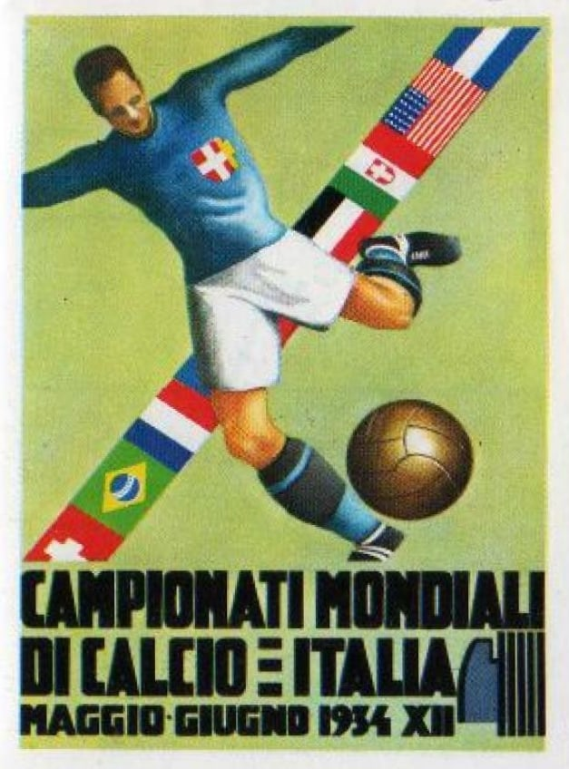1938: Franta
Cupa Mondiala a fost jucata in Franta, in perioada 4 Iunie-19 Iunie, avand 16 nationale.
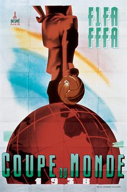1950: Brazilia
Cupa Mondiala a fost jucata in Brazilia, in perioada 24 Iunie-16 Iulie, avand 15 nationale.
1954: Elvetia
Cupa Mondiala a fost jucata in Elvetia, in perioada 16 Iunie-4 Iulie, avand 16 nationale.
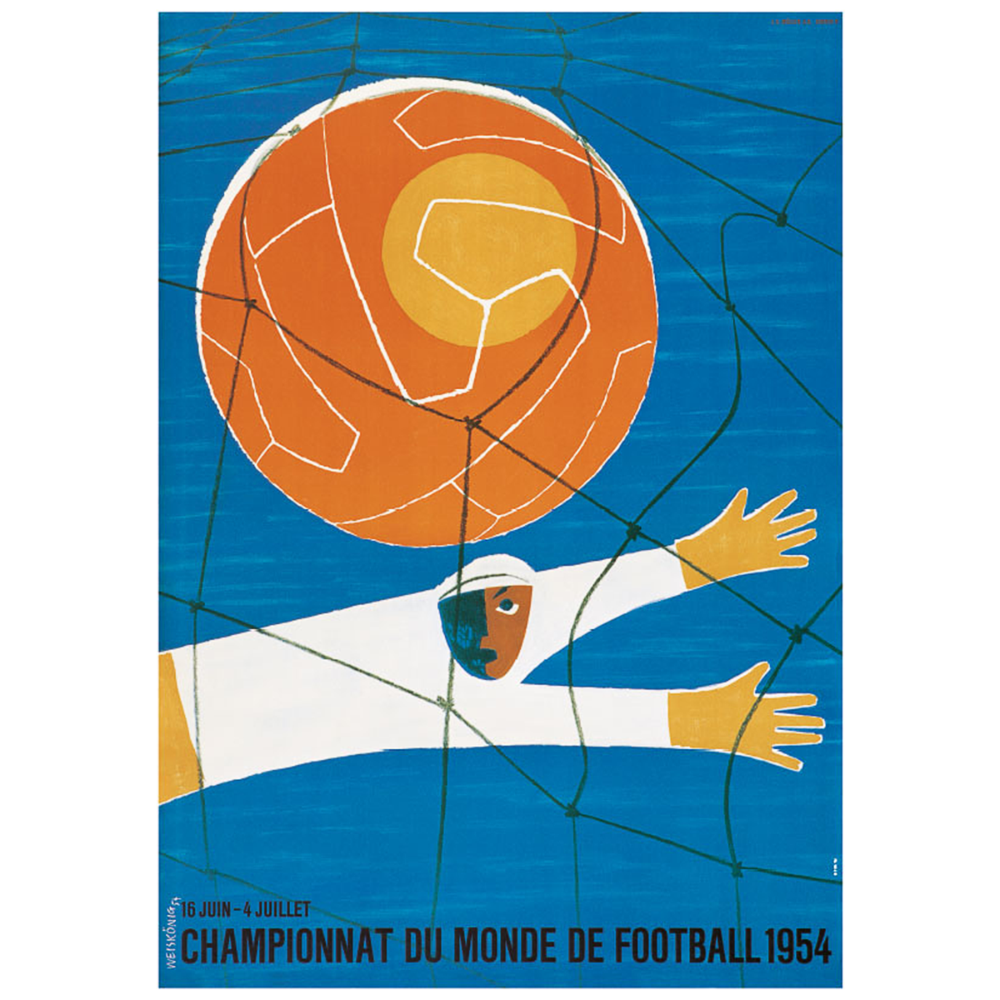1958: Suedia
Cupa Mondiala a fost jucata in Suedia, in perioada 8 Iunie-29 Iunie, avand 16 nationale.
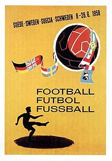1962: Chile
Cupa Mondiala a fost jucata in Chile, in perioada 30 Mai-17 Iunie, avand 16 nationale.
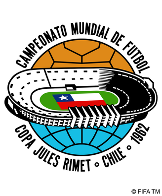1966: Anglia
Cupa Mondiala a fost jucata in Anglia, in perioada 11 Iulie-30 Iulie, avand 16 nationale.

1970: Mexic
Cupa Mondiala a fost jucata in Mexic, in perioada 31 Mai-21 Iunie, avand 16 nationale.
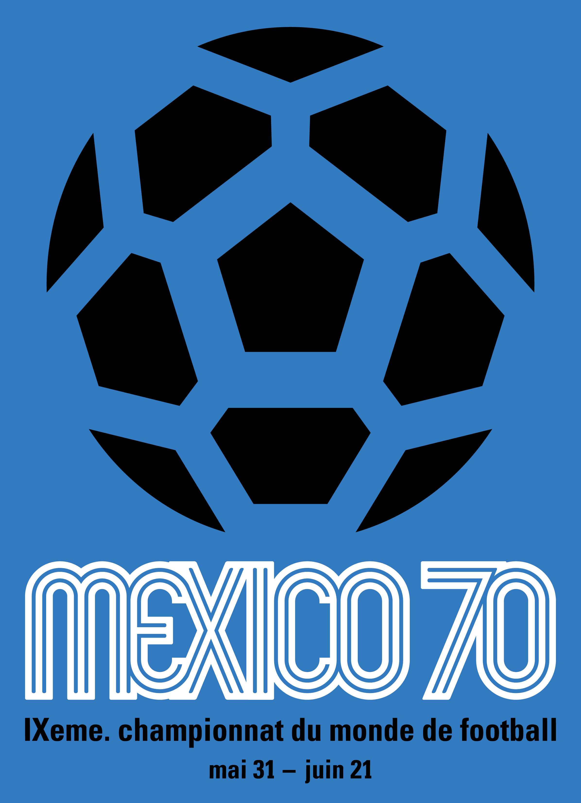1974: Germania de Vest
Cupa Mondiala a fost jucata in Germania de Vest, in perioada 13 Iunie-7 Iulie, avand 16 nationale.
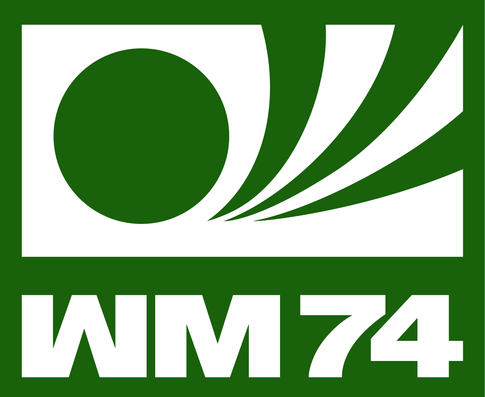1978: Argentina
Cupa Mondiala a fost jucata in Argentina, in perioada 1 Iunie-25 Iunie, avand 16 nationale.
1982: Spania
Cupa Mondiala a fost jucata in Spania, in perioada 13 Iunie-11 Iulie, avand 24 nationale.
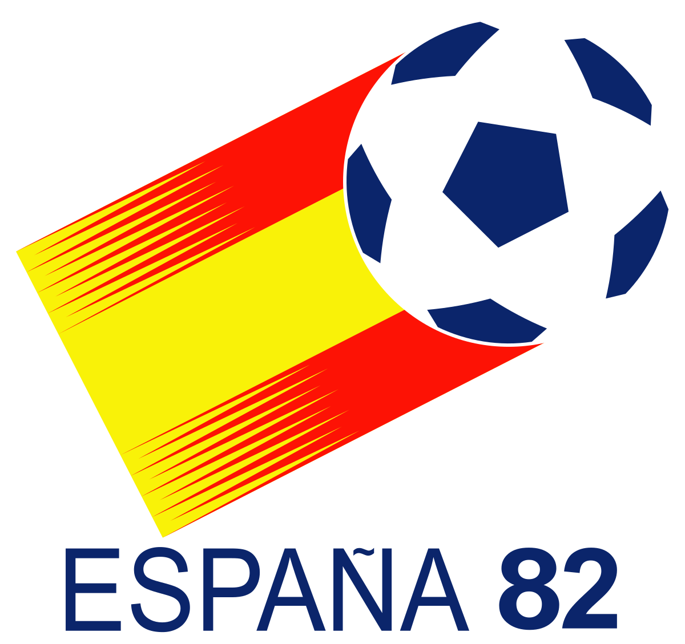1986: Mexic
Cupa Mondiala a fost jucata in Mexic, in perioada 31 Mai-29 Iunie, avand 24 nationale.
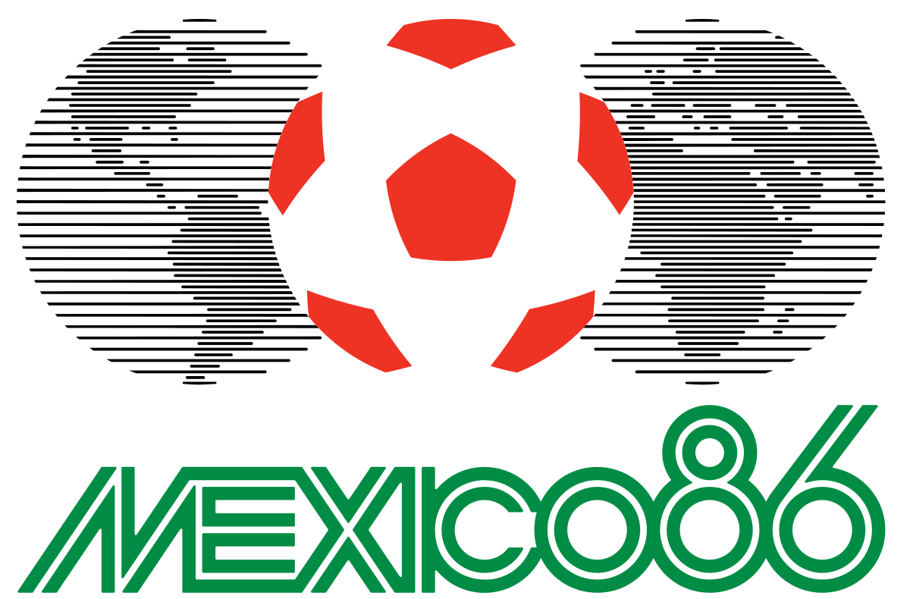1990: Italia
Cupa Mondiala a fost jucata in Italia, in perioada 8 Iunie-8 Iulie, avand 24 nationale.
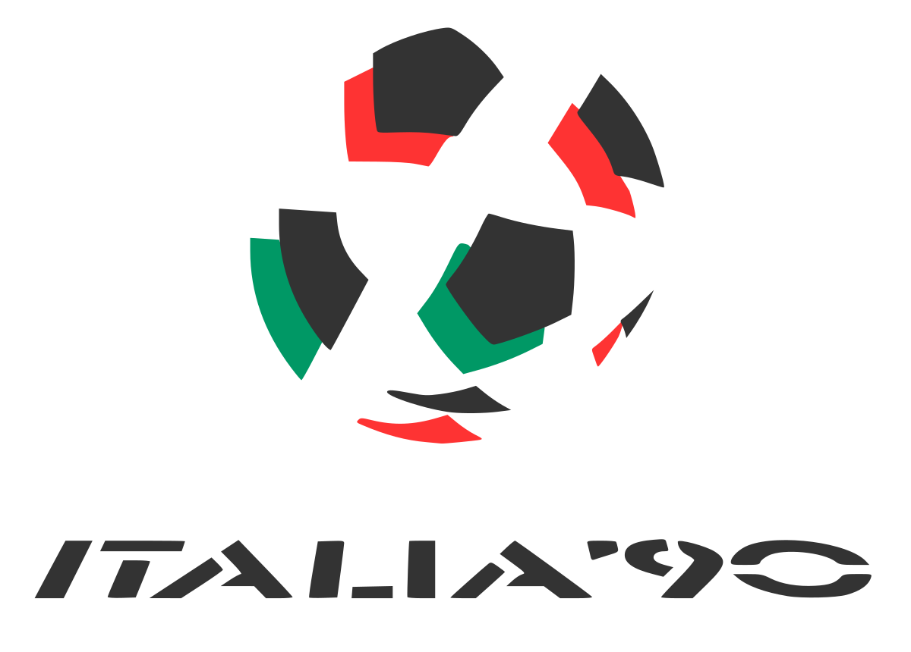1994: Statele Unite ale Americii
Cupa Mondiala a fost jucata in Statele Unite ale Americii, in perioada 17 Iunie-17 Iulie, avand 24 nationale.
1998: Franta
Cupa Mondiala a fost jucata in Franta, in perioada 10 Iunie-12 Iulie, avand 32 nationale.
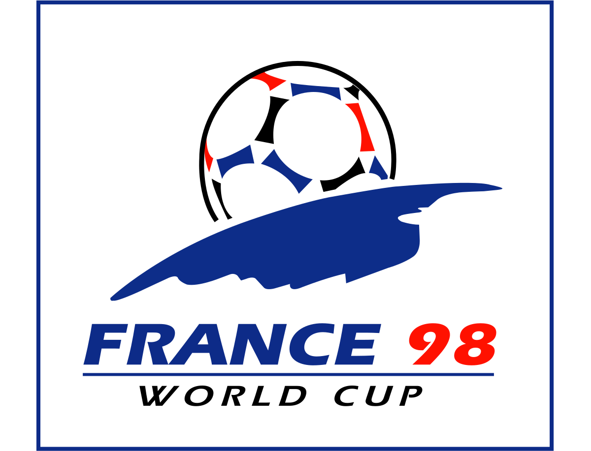2002: Korea si Japonia
Cupa Mondiala a fost jucata in Korea si Japonia, in perioada 31 Mai-30 Iunie, avand 32 nationale.
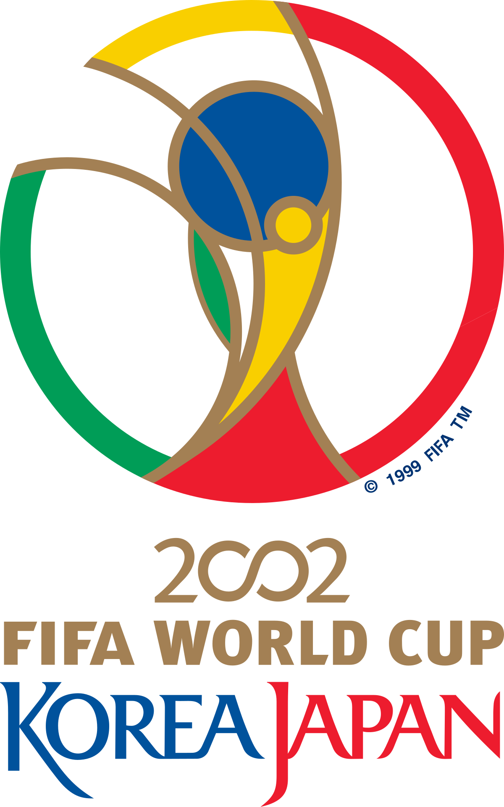2006: Germania
Cupa Mondiala a fost jucata in Germania, in perioada 9 Iunie-9 Iulie, avand 32 nationale.
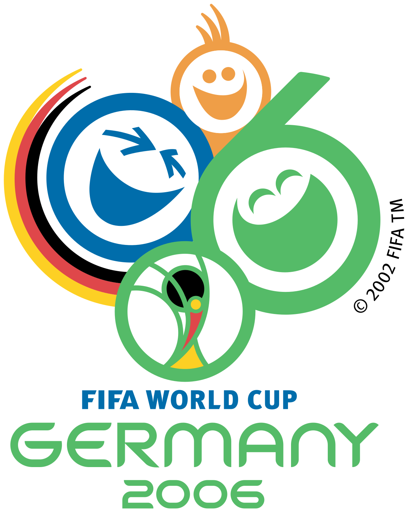2010: Africa de Sud
Cupa Mondiala a fost jucata in Africa de Sud, in perioada 11 Iunie-11 Iulie, avand 32 nationale.
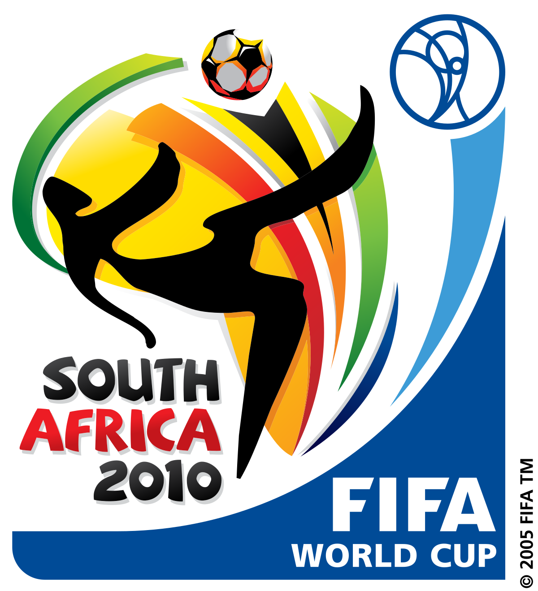2014: Brazilia
Cupa Mondiala a fost jucata in Brazilia, in perioada 12 Iunie-13 Iulie, avand 32 nationale.
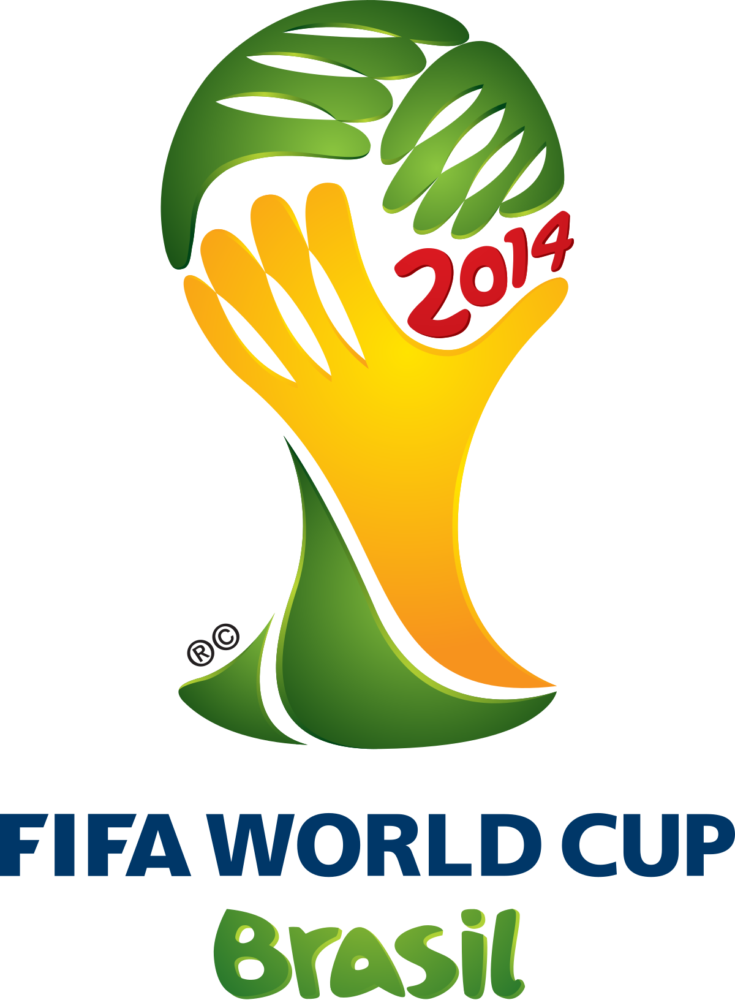2018: Rusia
Cupa Mondiala a fost jucata in Rusia, in perioada 14 Iunie-15 Iulie, avand 32 nationale.